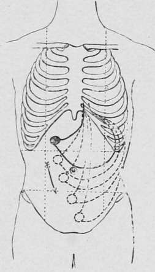

Special Features. Tumours of the Pylorus
Description
This section is from the book "Cancer And Other Tumours Of The Stomach", by Samuel Fenwick. Also available from Amazon: Cancer and other tumours of the stomach.
Special Features. Tumours of the Pylorus
These constitute about 60 per cent, of all gastric tumours, and three out of every four (75 per cent.) may be recognised by palpation at one period or other of the disease. Three conditions militate against their detection, viz. localisation of the growth at the orifice, adhesion to the under surface of the liver, and distension of the abdomen by fluid or gas.
In itself a pyloric tumour is seldom of great size, a large nodular mass being usually due to extensive thickening of the omentum, adhesion of the pylorus to the colon, duodenum, or the gall-bladder, or to enlargement of the perigastric glands.
That form of carcinoma which produces the greatest dilatation of the stomach is a contracting scirrhus, and consequently the size of a pyloric tumour is usually inversely proportionate to that of the stomach. On the other hand, a considerable degree of gastrectasis may ensue from an infiltration of the pyloric half of the organ, only a portion of which produces a palpable tumour. These considerations tend to establish three facts: (1) That palpation affords no clue to the real size or extent of the growth, which a necropsy usually proves to be at least twice as large as its physical signs seemed to indicate during life. (2) That extreme dilatation of the stomach is seldom associated with a large tumour, and very often with none at all. (3) That the great bulk of a large tumour is due to implication of the omentum and other viscera in the vicinity of the pylorus.
The shape of a pyloric tumour varies considerably, being round, oval, irregular, or elongated, according as the viscus itself or the surroundingstructures constitute the bulk of the mass. In most instances it is situated slightly above and to the right of the umbilicus, and close to the median line of the abdomen; but when the stomach is dilated it is often felt outside the right parasternal line, while if the organ is empty it may be located in the epigastrium or left hypochondrium. In the absence of adhesions the weight of the enlarged stomach gradually displaces the pylorus downwards, so that the tumour may eventually present itself in the hypogastrium, or even in the pelvis.
Mobility is usually a marked feature ; the descent upon inspiration being greatest when the growth is adherent to the liver, while if the tumour is not attached to the surrounding viscera it can be moved in various directions by the application of pressure. Tenderness may or may not exist, and when grasped by the hand the left extremity of the mass may sometimes be felt to alternately harden and relax with each peristaltic movement of the hypertrophied stomach. At such times gurgling may be both heard and felt in the neighbourhood of the tumour, and the mass may pulsate owing to its proximity to the aorta.
Fig. 44.-Showing the downward displacement of a pyloric tumour free from adhesions by the traction of a dilated stomach.
Continue to:
- prev: Mechanical Mobility
- Table of Contents
- next: Tumours Of The Body Of The Stomach (Walls And Curvatures)